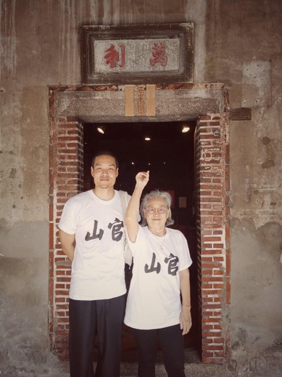
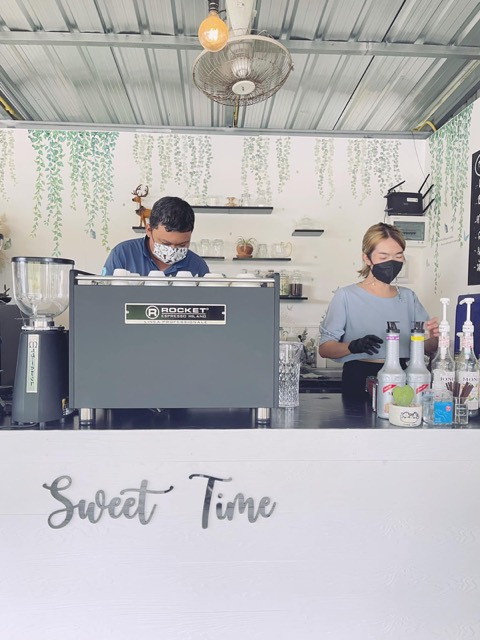
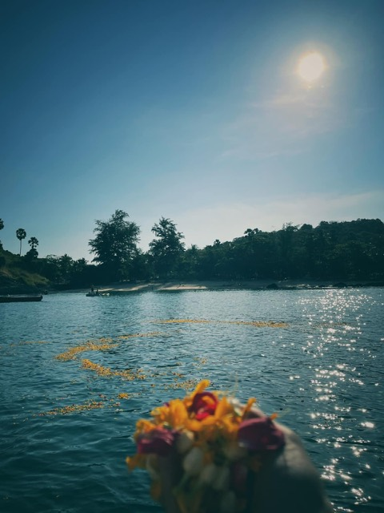

บันทึกปี 2565 2022
9 รายการ
เยี่ยมชมหอประวัติชูเกียรติปิติเจริญกิจ เชื่อมโยงประวัติศาสตร์ตระกูลสังคม

+3 รูปในหน้าเหตุการณ์
'บ้านอาจ้อ' จากอังมอเหลา 80 ปีสู่โฮมมิวเซียม…บ้าน·ตระกูล
ที่มา: Once in Lifeทีมงานรุ่นบุกเบิกบ้านอาจ้อ ต่อยอดเปิดร้านกาแฟตัวเองกิจการ

The Cloud เล่าเรื่องบ้านอั้งม้อหลาว 86 ปี ที่พี่น้องสองคนบูรณะบ้าน·ตระกูล
ที่มา: The Cloudบทกลอนไว้อาลัยอาก๊อง ณรงค์ หงษ์หยกสังคม
